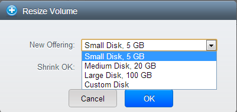

Storage Overview¶
CloudStack defines two types of storage: primary and secondary. Primary storage can be accessed by either iSCSI or NFS. Additionally, direct attached storage may be used for primary storage. Secondary storage is always accessed using NFS.
There is no ephemeral storage in CloudStack. All volumes on all nodes are persistent.
Primary Storage¶
This section gives technical details about CloudStack primary storage. For more information about the concepts behind primary storage see Primary Storage . For information about how to install and configure primary storage through the CloudStack UI, see the in the Installation Guide.
Best Practices for Primary Storage¶
The speed of primary storage will impact guest performance. If possible, choose smaller, higher RPM drives or SSDs for primary storage.
There are two ways CloudStack can leverage primary storage:
Static: This is CloudStack’s traditional way of handling storage. In this model, a preallocated amount of storage (ex. a volume from a SAN) is given to CloudStack. CloudStack then permits many of its volumes to be created on this storage (can be root and/or data disks). If using this technique, ensure that nothing is stored on the storage. Adding the storage to CloudStack will destroy any existing data.
Dynamic: This is a newer way for CloudStack to manage storage. In this model, a storage system (rather than a preallocated amount of storage) is given to CloudStack. CloudStack, working in concert with a storage plug-in, dynamically creates volumes on the storage system and each volume on the storage system maps to a single CloudStack volume. This is highly useful for features such as storage Quality of Service. Currently this feature is supported for data disks (Disk Offerings).
Runtime Behavior of Primary Storage¶
Root volumes are created automatically when a virtual machine is created. Root volumes are deleted when the VM is destroyed. Data volumes can be created and dynamically attached to VMs. Data volumes are not deleted when VMs are destroyed.
Administrators should monitor the capacity of primary storage devices and add additional primary storage as needed. See the Advanced Installation Guide.
Administrators add primary storage to the system by creating a CloudStack storage pool. Each storage pool is associated with a cluster or a zone.
With regards to data disks, when a user executes a Disk Offering to create a data disk, the information is initially written to the CloudStack database only. Upon the first request that the data disk be attached to a VM, CloudStack determines what storage to place the volume on and space is taken from that storage (either from preallocated storage or from a storage system (ex. a SAN), depending on how the primary storage was added to CloudStack).
Hypervisor Support for Primary Storage¶
The following table shows storage options and parameters for different hypervisors.
| Storage media \ hypervisor | VMware vSphere | Citrix XenServer | KVM | Hyper-V |
|---|---|---|---|---|
| Format for Disks, Templates, and Snapshots | VMDK | VHD | QCOW2 | VHD Snapshots are not supported. |
| iSCSI support | VMFS | Clustered LVM | Yes, via Shared Mountpoint | No |
| Fiber Channel support | VMFS | Yes, via Existing SR | Yes, via Shared Mountpoint | No |
| NFS support | Yes | Yes | Yes | No |
| Local storage support | Yes | Yes | Yes | Yes |
| Storage over-provisioning | NFS and iSCSI | NFS | NFS | No |
| SMB/CIFS | No | No | No | Yes |
| Ceph/RBD | No | No | Yes | No |
XenServer uses a clustered LVM system to store VM images on iSCSI and Fiber Channel volumes and does not support over-provisioning in the hypervisor. The storage server itself, however, can support thin-provisioning. As a result the CloudStack can still support storage over-provisioning by running on thin-provisioned storage volumes.
KVM supports “Shared Mountpoint” storage. A shared mountpoint is a file system path local to each server in a given cluster. The path must be the same across all Hosts in the cluster, for example /mnt/primary1. This shared mountpoint is assumed to be a clustered filesystem such as OCFS2. In this case the CloudStack does not attempt to mount or unmount the storage as is done with NFS. The CloudStack requires that the administrator insure that the storage is available
With NFS storage, CloudStack manages the overprovisioning. In this case the global configuration parameter storage.overprovisioning.factor controls the degree of overprovisioning. This is independent of hypervisor type.
Local storage is an option for primary storage for vSphere, XenServer, and KVM. When the local disk option is enabled, a local disk storage pool is automatically created on each host. To use local storage for the System Virtual Machines (such as the Virtual Router), set system.vm.use.local.storage to true in global configuration.
CloudStack supports multiple primary storage pools in a Cluster. For example, you could provision 2 NFS servers in primary storage. Or you could provision 1 iSCSI LUN initially and then add a second iSCSI LUN when the first approaches capacity.
Storage Tags¶
Storage may be “tagged”. A tag is a text string attribute associated with primary storage, a Disk Offering, or a Service Offering. Tags allow administrators to provide additional information about the storage. For example, that is a “SSD” or it is “slow”. Tags are not interpreted by CloudStack. They are matched against tags placed on service and disk offerings. CloudStack requires all tags on service and disk offerings to exist on the primary storage before it allocates root or data disks on the primary storage. Service and disk offering tags are used to identify the requirements of the storage that those offerings have. For example, the high end service offering may require “fast” for its root disk volume.
The interaction between tags, allocation, and volume copying across clusters and pods can be complex. To simplify the situation, use the same set of tags on the primary storage for all clusters in a pod. Even if different devices are used to present those tags, the set of exposed tags can be the same.
Maintenance Mode for Primary Storage¶
Primary storage may be placed into maintenance mode. This is useful, for example, to replace faulty RAM in a storage device. Maintenance mode for a storage device will first stop any new guests from being provisioned on the storage device. Then it will stop all guests that have any volume on that storage device. When all such guests are stopped the storage device is in maintenance mode and may be shut down. When the storage device is online again you may cancel maintenance mode for the device. The CloudStack will bring the device back online and attempt to start all guests that were running at the time of the entry into maintenance mode.
Secondary Storage¶
This section gives concepts and technical details about CloudStack secondary storage. For information about how to install and configure secondary storage through the CloudStack UI, see the Advanced Installation Guide. about-secondary-storage>`_
Working With Volumes¶
A volume provides storage to a guest VM. The volume can provide for a root disk or an additional data disk. CloudStack supports additional volumes for guest VMs.
Volumes are created for a specific hypervisor type. A volume that has been attached to guest using one hypervisor type (e.g, XenServer) may not be attached to a guest that is using another hypervisor type, for example:vSphere, KVM. This is because the different hypervisors use different disk image formats.
CloudStack defines a volume as a unit of storage available to a guest VM. Volumes are either root disks or data disks. The root disk has “/” in the file system and is usually the boot device. Data disks provide for additional storage, for example: “/opt” or “D:”. Every guest VM has a root disk, and VMs can also optionally have a data disk. End users can mount multiple data disks to guest VMs. Users choose data disks from the disk offerings created by administrators. The user can create a template from a volume as well; this is the standard procedure for private template creation. Volumes are hypervisor-specific: a volume from one hypervisor type may not be used on a guest of another hypervisor type.
Note
CloudStack supports attaching up to
- 13 data disks on XenServer hypervisor versions 6.0 and above, And all versions of VMware.
- 64 data disks on Hyper-V.
- 6 data disks on other hypervisor types.
Creating a New Volume¶
You can add more data disk volumes to a guest VM at any time, up to the limits of your storage capacity. Both CloudStack administrators and users can add volumes to VM instances. When you create a new volume, it is stored as an entity in CloudStack, but the actual storage resources are not allocated on the physical storage device until you attach the volume. This optimization allows the CloudStack to provision the volume nearest to the guest that will use it when the first attachment is made.
Using Local Storage for Data Volumes¶
You can create data volumes on local storage (supported with XenServer, KVM, and VMware). The data volume is placed on the same host as the VM instance that is attached to the data volume. These local data volumes can be attached to virtual machines, detached, re-attached, and deleted just as with the other types of data volume.
Local storage is ideal for scenarios where persistence of data volumes and HA is not required. Some of the benefits include reduced disk I/O latency and cost reduction from using inexpensive local disks.
In order for local volumes to be used, the feature must be enabled for the zone.
You can create a data disk offering for local storage. When a user creates a new VM, they can select this disk offering in order to cause the data disk volume to be placed in local storage.
You can not migrate a VM that has a volume in local storage to a different host, nor migrate the volume itself away to a different host. If you want to put a host into maintenance mode, you must first stop any VMs with local data volumes on that host.
To Create a New Volume¶
Log in to the CloudStack UI as a user or admin.
In the left navigation bar, click Storage.
In Select View, choose Volumes.
To create a new volume, click Add Volume, provide the following details, and click OK.
- Name. Give the volume a unique name so you can find it later.
- Availability Zone. Where do you want the storage to reside? This should be close to the VM that will use the volume.
- Disk Offering. Choose the characteristics of the storage.
The new volume appears in the list of volumes with the state “Allocated.” The volume data is stored in CloudStack, but the volume is not yet ready for use
To start using the volume, continue to Attaching a Volume
Uploading an Existing Volume to a Virtual Machine¶
Existing data can be made accessible to a virtual machine. This is called uploading a volume to the VM. For example, this is useful to upload data from a local file system and attach it to a VM. Root administrators, domain administrators, and end users can all upload existing volumes to VMs.
The upload is performed using HTTP. The uploaded volume is placed in the zone’s secondary storage
You cannot upload a volume if the preconfigured volume limit has already been reached. The default limit for the cloud is set in the global configuration parameter max.account.volumes, but administrators can also set per-domain limits that are different from the global default. See Setting Usage Limits
To upload a volume:
(Optional) Create an MD5 hash (checksum) of the disk image file that you are going to upload. After uploading the data disk, CloudStack will use this value to verify that no data corruption has occurred.
Log in to the CloudStack UI as an administrator or user
In the left navigation bar, click Storage.
Click Upload Volume.
Provide the following:
Name and Description. Any desired name and a brief description that can be shown in the UI.
Availability Zone. Choose the zone where you want to store the volume. VMs running on hosts in this zone can attach the volume.
Format. Choose one of the following to indicate the disk image format of the volume.
Hypervisor Disk Image Format XenServer VHD VMware OVA KVM QCOW2 URL. The secure HTTP or HTTPS URL that CloudStack can use to access your disk. The type of file at the URL must match the value chosen in Format. For example, if Format is VHD, the URL might look like the following:
http://yourFileServerIP/userdata/myDataDisk.vhdMD5 checksum. (Optional) Use the hash that you created in step 1.
Wait until the status of the volume shows that the upload is complete. Click Instances - Volumes, find the name you specified in step 5, and make sure the status is Uploaded.
Attaching a Volume¶
You can attach a volume to a guest VM to provide extra disk storage. Attach a volume when you first create a new volume, when you are moving an existing volume from one VM to another, or after you have migrated a volume from one storage pool to another.
- Log in to the CloudStack UI as a user or admin.
- In the left navigation, click Storage.
- In Select View, choose Volumes.
- Click the volume name in the Volumes list, then click the Attach Disk button
- In the Instance popup, choose the VM to which you want to attach the volume. You will only see instances to which you are allowed to attach volumes; for example, a user will see only instances created by that user, but the administrator will have more choices.
- When the volume has been attached, you should be able to see it by clicking Instances, the instance name, and View Volumes.
Detaching and Moving Volumes¶
Note
This procedure is different from moving volumes from one storage pool to another as described in “VM Storage Migration”.
A volume can be detached from a guest VM and attached to another guest. Both CloudStack administrators and users can detach volumes from VMs and move them to other VMs.
If the two VMs are in different clusters, and the volume is large, it may take several minutes for the volume to be moved to the new VM.
- Log in to the CloudStack UI as a user or admin.
- In the left navigation bar, click Storage, and choose Volumes in Select View. Alternatively, if you know which VM the volume is attached to, you can click Instances, click the VM name, and click View Volumes.
- Click the name of the volume you want to detach, then click the Detach Disk button.
- To move the volume to another VM, follow the steps in “Attaching a Volume”.
VM Storage Migration¶
Supported in XenServer, KVM, and VMware.
Note
This procedure is different from moving disk volumes from one VM to another as described in “Detaching and Moving Volumes”.
You can migrate a virtual machine’s root disk volume or any additional data disk volume from one storage pool to another in the same zone.
You can use the storage migration feature to achieve some commonly desired administration goals, such as balancing the load on storage pools and increasing the reliability of virtual machines by moving them away from any storage pool that is experiencing issues.
On XenServer and VMware, live migration of VM storage is enabled through CloudStack support for XenMotion and vMotion. Live storage migration allows VMs to be moved from one host to another, where the VMs are not located on storage shared between the two hosts. It provides the option to live migrate a VM’s disks along with the VM itself. It is possible to migrate a VM from one XenServer resource pool / VMware cluster to another, or to migrate a VM whose disks are on local storage, or even to migrate a VM’s disks from one storage repository to another, all while the VM is running.
Note
Because of a limitation in VMware, live migration of storage for a VM is allowed only if the source and target storage pool are accessible to the source host; that is, the host where the VM is running when the live migration operation is requested.
Migrating a Data Volume to a New Storage Pool¶
There are two situations when you might want to migrate a disk:
- Move the disk to new storage, but leave it attached to the same running VM.
- Detach the disk from its current VM, move it to new storage, and attach it to a new VM.
Migrating Storage For a Running VM¶
(Supported on XenServer and VMware)
- Log in to the CloudStack UI as a user or admin.
- In the left navigation bar, click Instances, click the VM name, and click View Volumes.
- Click the volume you want to migrate.
- Detach the disk from the VM. See “Detaching and Moving Volumes” but skip the “reattach” step at the end. You will do that after migrating to new storage.
- Click the Migrate Volume button
 and choose the
destination from the dropdown list.
and choose the
destination from the dropdown list. - Watch for the volume status to change to Migrating, then back to Ready.
Migrating Storage and Attaching to a Different VM¶
- Log in to the CloudStack UI as a user or admin.
- Detach the disk from the VM. See “Detaching and Moving Volumes” but skip the “reattach” step at the end. You will do that after migrating to new storage.
- Click the Migrate Volume button and choose the
destination from the dropdown list.
- Watch for the volume status to change to Migrating, then back to Ready. You can find the volume by clicking Storage in the left navigation bar. Make sure that Volumes is displayed at the top of the window, in the Select View dropdown.
- Attach the volume to any desired VM running in the same cluster as the new storage server. See “Attaching a Volume”
Migrating a VM Root Volume to a New Storage Pool¶
(XenServer, VMware) You can live migrate a VM’s root disk from one storage pool to another, without stopping the VM first.
(KVM) When migrating the root disk volume, the VM must first be stopped, and users can not access the VM. After migration is complete, the VM can be restarted.
Log in to the CloudStack UI as a user or admin.
In the left navigation bar, click Instances, and click the VM name.
(KVM only) Stop the VM.
Click the Migrate button
and choose the
destination from the dropdown list.Note
If the VM’s storage has to be migrated along with the VM, this will be noted in the host list. CloudStack will take care of the storage migration for you.
Watch for the volume status to change to Migrating, then back to Running (or Stopped, in the case of KVM). This can take some time.
(KVM only) Restart the VM.
Resizing Volumes¶
CloudStack provides the ability to resize data disks; CloudStack controls volume size by using disk offerings. This provides CloudStack administrators with the flexibility to choose how much space they want to make available to the end users. Volumes within the disk offerings with the same storage tag can be resized. For example, if you only want to offer 10, 50, and 100 GB offerings, the allowed resize should stay within those limits. That implies if you define a 10 GB, a 50 GB and a 100 GB disk offerings, a user can upgrade from 10 GB to 50 GB, or 50 GB to 100 GB. If you create a custom-sized disk offering, then you have the option to resize the volume by specifying a new, larger size.
Additionally, using the resizeVolume API, a data volume can be moved from a static disk offering to a custom disk offering with the size specified. This functionality allows those who might be billing by certain volume sizes or disk offerings to stick to that model, while providing the flexibility to migrate to whatever custom size necessary.
This feature is supported on KVM, XenServer, and VMware hosts. However, shrinking volumes is not supported on VMware hosts.
Before you try to resize a volume, consider the following:
- The VMs associated with the volume are stopped.
- The data disks associated with the volume are removed.
- When a volume is shrunk, the disk associated with it is simply truncated, and doing so would put its content at risk of data loss. Therefore, resize any partitions or file systems before you shrink a data disk so that all the data is moved off from that disk.
To resize a volume:
Log in to the CloudStack UI as a user or admin.
In the left navigation bar, click Storage.
In Select View, choose Volumes.
Select the volume name in the Volumes list, then click the Resize Volume button
In the Resize Volume pop-up, choose desired characteristics for the storage.

If you select Custom Disk, specify a custom size.
Click Shrink OK to confirm that you are reducing the size of a volume.
This parameter protects against inadvertent shrinking of a disk, which might lead to the risk of data loss. You must sign off that you know what you are doing.
Click OK.
Reset VM to New Root Disk on Reboot¶
You can specify that you want to discard the root disk and create a new one whenever a given VM is rebooted. This is useful for secure environments that need a fresh start on every boot and for desktops that should not retain state. The IP address of the VM will not change due to this operation.
To enable root disk reset on VM reboot:
When creating a new service offering, set the parameter isVolatile to True. VMs created from this service offering will have their disks reset upon reboot. See “Creating a New Compute Offering”.
Volume Deletion and Garbage Collection¶
The deletion of a volume does not delete the snapshots that have been created from the volume
When a VM is destroyed, data disk volumes that are attached to the VM are not deleted.
Volumes are permanently destroyed using a garbage collection process. The global configuration variables expunge.delay and expunge.interval determine when the physical deletion of volumes will occur.
- expunge.delay: determines how old the volume must be before it is destroyed, in seconds
- expunge.interval: determines how often to run the garbage collection check
Administrators should adjust these values depending on site policies around data retention.
Working with Volume Snapshots¶
(Supported for the following hypervisors: XenServer, VMware vSphere, and KVM)
CloudStack supports snapshots of disk volumes. Snapshots are a point-in-time capture of virtual machine disks. Memory and CPU states are not captured. If you are using the Oracle VM hypervisor, you can not take snapshots, since OVM does not support them.
Snapshots may be taken for volumes, including both root and data disks (except when the Oracle VM hypervisor is used, which does not support snapshots). The administrator places a limit on the number of stored snapshots per user. Users can create new volumes from the snapshot for recovery of particular files and they can create templates from snapshots to boot from a restored disk.
Users can create snapshots manually or by setting up automatic recurring snapshot policies. Users can also create disk volumes from snapshots, which may be attached to a VM like any other disk volume. Snapshots of both root disks and data disks are supported. However, CloudStack does not currently support booting a VM from a recovered root disk. A disk recovered from snapshot of a root disk is treated as a regular data disk; the data on recovered disk can be accessed by attaching the disk to a VM.
A completed snapshot is copied from primary storage to secondary storage, where it is stored until deleted or purged by newer snapshot.
How to Snapshot a Volume¶
- Log in to the CloudStack UI as a user or administrator.
- In the left navigation bar, click Storage.
- In Select View, be sure Volumes is selected.
- Click the name of the volume you want to snapshot.
- Click the Snapshot button.

Automatic Snapshot Creation and Retention¶
(Supported for the following hypervisors: XenServer, VMware vSphere, and KVM)
Users can set up a recurring snapshot policy to automatically create multiple snapshots of a disk at regular intervals. Snapshots can be created on an hourly, daily, weekly, or monthly interval. One snapshot policy can be set up per disk volume. For example, a user can set up a daily snapshot at 02:30.
With each snapshot schedule, users can also specify the number of scheduled snapshots to be retained. Older snapshots that exceed the retention limit are automatically deleted. This user-defined limit must be equal to or lower than the global limit set by the CloudStack administrator. See “Globally Configured Limits”. The limit applies only to those snapshots that are taken as part of an automatic recurring snapshot policy. Additional manual snapshots can be created and retained.
Incremental Snapshots and Backup¶
Snapshots are created on primary storage where a disk resides. After a snapshot is created, it is immediately backed up to secondary storage and removed from primary storage for optimal utilization of space on primary storage.
CloudStack does incremental backups for some hypervisors. When incremental backups are supported, every N backup is a full backup.
| VMware vSphere | Citrix XenServer | KVM | |
|---|---|---|---|
| Support incremental backup | No | Yes | No |
Volume Status¶
When a snapshot operation is triggered by means of a recurring snapshot policy, a snapshot is skipped if a volume has remained inactive since its last snapshot was taken. A volume is considered to be inactive if it is either detached or attached to a VM that is not running. CloudStack ensures that at least one snapshot is taken since the volume last became inactive.
When a snapshot is taken manually, a snapshot is always created regardless of whether a volume has been active or not.
Snapshot Restore¶
There are two paths to restoring snapshots. Users can create a volume from the snapshot. The volume can then be mounted to a VM and files recovered as needed. Alternatively, a template may be created from the snapshot of a root disk. The user can then boot a VM from this template to effect recovery of the root disk.
Snapshot Job Throttling¶
When a snapshot of a virtual machine is requested, the snapshot job runs on the same host where the VM is running or, in the case of a stopped VM, the host where it ran last. If many snapshots are requested for VMs on a single host, this can lead to problems with too many snapshot jobs overwhelming the resources of the host.
To address this situation, the cloud’s root administrator can throttle how many snapshot jobs are executed simultaneously on the hosts in the cloud by using the global configuration setting concurrent.snapshots.threshold.perhost. By using this setting, the administrator can better ensure that snapshot jobs do not time out and hypervisor hosts do not experience performance issues due to hosts being overloaded with too many snapshot requests.
Set concurrent.snapshots.threshold.perhost to a value that represents a best guess about how many snapshot jobs the hypervisor hosts can execute at one time, given the current resources of the hosts and the number of VMs running on the hosts. If a given host has more snapshot requests, the additional requests are placed in a waiting queue. No new snapshot jobs will start until the number of currently executing snapshot jobs falls below the configured limit.
The admin can also set job.expire.minutes to place a maximum on how long a snapshot request will wait in the queue. If this limit is reached, the snapshot request fails and returns an error message.
VMware Volume Snapshot Performance¶
When you take a snapshot of a data or root volume on VMware, CloudStack uses an efficient storage technique to improve performance.
A snapshot is not immediately exported from vCenter to a mounted NFS share and packaged into an OVA file format. This operation would consume time and resources. Instead, the original file formats (e.g., VMDK) provided by vCenter are retained. An OVA file will only be created as needed, on demand. To generate the OVA, CloudStack uses information in a properties file (*.ova.meta) which it stored along with the original snapshot data.
Note
For upgrading customers: This process applies only to newly created snapshots after upgrade to CloudStack 4.2. Snapshots that have already been taken and stored in OVA format will continue to exist in that format, and will continue to work as expected.